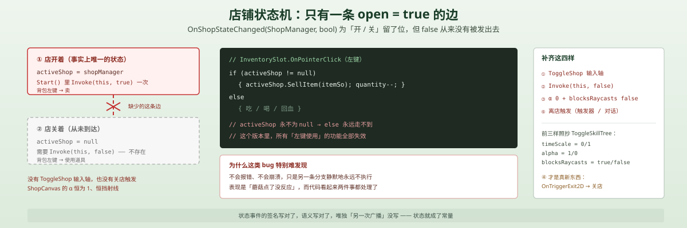
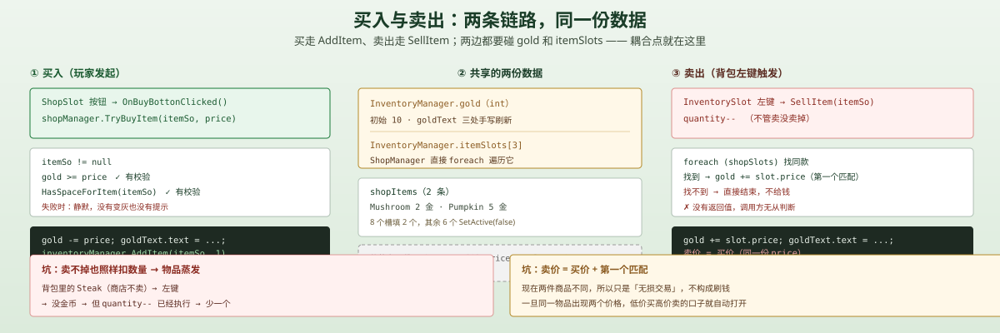

一句话说清这天的内容
把 Day 14 摆好的 8 个空格子接上真数据：ShopItems 表里填 2 件（Mushroom 2 金、Pumpkin 5 金），PopulateShopItems() 把前 2 格填满、剩下 6 格 SetActive(false)；点格子上的按钮 → TryBuyItem → 查钱、查空间、扣钱、AddItem。反向就是卖：背包左键 → activeShop.SellItem(itemSo)。
买和卖都能跑了。但这间店没有关门的方法，代价落在下一节。
脚本关系
| 脚本 | 角色 | 行数 | 关键内容 |
|---|---|---|---|
ShopManager | 新 | 75 | ShopItems 表、填充槽位、TryBuyItem、SellItem、OnShopStateChanged |
ShopSlot | 新 | 26 | 一个商品格：Initialize(itemSo, price)、购买按钮回调 |
InventorySlot | 改 | 73 | 加 activeShop 上下文：有店时左键＝卖，没店时左键＝用 |
InventoryManager | 改 | 91 | 字段 inventorySlots 改名 itemSlots；其余逻辑不变 |
ShopSlot.prefab | 改 | — | 加了一个 Button，onClick → ShopSlot.OnBuyBottonClicked |
调用链（买）：
点击 ShopSlot 的按钮 → OnBuyBottonClicked() → shopManager.TryBuyItem(itemSo, price) → 钱够 && 有空间 → gold -= price + 刷文本 → inventoryManager.AddItem(itemSo, 1)
调用链（卖）：
背包格左键 → activeShop != null → activeShop.SellItem(itemSo) → 在 shopSlots 里找同款 → gold += 那格的价格
调用链（店铺状态）：
ShopManager.Start() → PopulateShopItems() → OnShopStateChanged?.Invoke(this, true) → 每个 InventorySlot 记下 activeShop
商品数据：一个 [Serializable] 类，而不是 ScriptableObject
[System.Serializable]
public class ShopItems
{
public ItemSo itemSo;
public int price;
}ShopManager 上挂的是一个 List<ShopItems>，场景里实际填了两条：
| 商品 | itemSo | price |
|---|---|---|
Mushroom | 蘑菇资产 | 2 |
Pumpkin | 南瓜资产 | 5 |
玩家初始 gold = 10——正好够买 2 个蘑菇 + 1 个南瓜，或者 5 个蘑菇。
为什么这里不用 ScriptableObject？ Day 8 的技能、Day 14 的物品都用 SO，因为它们要「被引用」：技能树节点要指向一份技能，掉落物要指向一份物品。而「这家店卖什么、卖多少」是这个商店实例的配置，不是一份可以在别处复用的资产。挂在 ShopManager 上、跟着场景走，是最省的结构。
真要做「连锁商店」「限时折扣」时，才会把「商品表」独立成 SO 或配置表；现在这样写，改价格只能进场景改 Inspector。
public void PopulateShopItems()
{
for (int i = 0; i < shopItems.Count && i < shopSlots.Length; i++)
{
ShopItems shopItem = shopItems[i];
shopSlots[i].Initialize(shopItem.itemSo, shopItem.price);
shopSlots[i].gameObject.SetActive(true);
}
for (int i = shopItems.Count; i < shopSlots.Length; i++)
{
shopSlots[i].gameObject.SetActive(false);
}
}两个循环：填有数据的，藏没数据的。8 个槽、2 条数据 → 屏幕上只会出现 2 格，剩下 6 格是模板位。
这个写法比「手动删掉多余 6 个槽」好：以后商品加到 5 件，只改 shopItems，不用回场景摆 UI。
买入：三个条件，缺一不可
public void TryBuyItem(ItemSo itemSo, int price)
{
if (itemSo != null && inventoryManager.gold >= price)
{
if (HasSpaceForItem(itemSo))
{
inventoryManager.gold -= price;
inventoryManager.goldText.text = inventoryManager.gold.ToString();
inventoryManager.AddItem(itemSo, 1);
}
}
}
private bool HasSpaceForItem(ItemSo itemSo)
{
foreach (var slot in inventoryManager.itemSlots)
{
if (slot.itemSo == itemSo && slot.quantity < itemSo.stackSize) return true;
else if (slot.itemSo == null) return true;
}
return false;
}设计 1：先查空间，再扣钱
顺序很关键：扣钱在前、AddItem 在后，但「有没有空间」必须在扣钱之前判断。反过来的话，钱花出去了、物品因为背包满而被 DropLoot 丢回地上——玩家会看到「钱没了，东西掉在脚边」。这不算崩，但体验上是「买了却没买到」。
设计 2：HasSpaceForItem 和 AddItem 是同一个判断的两份实现
HasSpaceForItem 里的两个分支（同款未满 / 有空槽）和 InventoryManager.AddItem 里的前两段是同一套规则写了两遍。
两处一起改才不会漂移；改一处就会出现「这里说有空间、那里塞不进去」。更稳的形状是把判断收进 InventoryManager：
public bool CanAccept(ItemSo item, int quantity) { ... }
public bool AddItem(ItemSo item, int quantity) { if (!CanAccept(...)) return false; ... }现在 ShopManager 直接遍历别人的 public 数组，耦合点就在这句 inventoryManager.itemSlots 上（见坑 6）。
设计 3：买进来的东西走的是「拾取」的同一个入口
AddItem(itemSo, 1) —— 和地上捡起来走的是同一个方法。所以买来的东西会自动堆叠、自动找空槽、背包满时自动掉地上。
这是「一个入口」的好处：商店不需要知道背包怎么组织。代价是坑 4 那个「买 1 个没事、买 5 个就出事」的隐患（Day 14 的空槽分支）。
卖出：反向的路径，两个问题
public void SellItem(ItemSo itemSo)
{
if (itemSo == null) return;
foreach (var slot in shopSlots)
{
if (slot.itemSo == itemSo)
{
inventoryManager.gold += slot.price;
inventoryManager.goldText.text = inventoryManager.gold.ToString();
return;
}
}
}设计：卖价直接借用商品价
店铺是「以同样的价格回收」——买 2 金，卖也是 2 金。省掉「收购价」这一层数据，交易没有摩擦。
真正的二手交易通常要 买入价 > 卖出价，否则玩家可以「买了立刻卖」来回避选择成本。现在没有摩擦，也没关系——因为买和卖用的是同一份 price，一进一出刚好抵消。
但「刚好抵消」只在「同款同价」时成立。见坑 3。
问题：卖不出去的东西，也会被扣掉
SellItem 里 foreach 找不到同款时直接结束，什么都不返回；而调用它的地方已经把数量减了：
if (activeShop != null)
{
activeShop.SellItem(itemSo);
quantity--; // 不管 SellItem 有没有成功
UpdateUI();
}背包里的 Steak 商店不卖 → 左键 → SellItem 找不到、不给钱 → quantity-- 照样执行 → 物品凭空少一个。
SellItem 应该返回 bool，调用方据此决定要不要减数量：
if (!activeShop.TrySell(itemSo)) return;
quantity--;坑 1（最严重）：店铺状态只广播一次 true，于是背包左键永远是「卖」
ShopManager 定义了一个状态事件：
public static event Action<ShopManager, bool> OnShopStateChanged;但全项目只有一处 Invoke，在 Start() 里：
private void Start()
{
PopulateShopItems();
OnShopStateChanged?.Invoke(this, true);
}没有任何地方发过 false。 场景里也没有 ToggleShop 的输入轴（只有 ToggleStats / ToggleSkillTree），ShopCanvas 的 CanvasGroup 是 α 1 / 挡射线 1——它从游戏一开始就是开着的。
于是 InventorySlot 里的这段变成永真：
private void HandleShopStateChanged(ShopManager shopManager, bool isOpen)
{
activeShop = isOpen ? shopManager : null; // 只会被设成 shopManager
}if (eventData.button == PointerEventData.InputButton.Left)
{
if (activeShop != null) // ← 永远成立
{
activeShop.SellItem(itemSo); // ← 左键永远在卖
quantity--;
}
else
{
... 使用道具的分支永远走不到 ...
}
}后果：蘑菇吃不了、南瓜吃不了、回血也用不了——所有「左键使用」的功能在这个版本里全部失效，左键只剩下「卖」。
这是今天最值得记的一条，因为它不是「忘了写」，而是写了一半的状态机：OnShopStateChanged(ShopManager, bool) 这个签名明确为「开/关」两种状态留了位，InventorySlot 也老老实实按 isOpen ? shop : null 写，唯独「关」的那一次广播没人发。
| 缺的东西 | 现在的样子 |
|---|---|
| 开关输入 | 无（InputManager 里只有 Stats / SkillTree） |
Invoke(this, false) | 不存在 |
| 面板可见性 | 恒 α 1、恒挡射线 |
| 「离店」触发 | 无（没有触发器、没有对话、没有 NPC） |
修法不复杂：给一个 ToggleShop 轴，开时 alpha=1 + blocksRaycasts=true + Invoke(this, true)，关时反过来 Invoke(this, false)。关键是那一次 false 必须发，否则背包的左键永远被商店占着。

坑 2：goldText 在三个地方被手写
gold 的每一次变化都跟着一句手写刷新：
| 位置 | 代码 |
|---|---|
InventoryManager.AddItem | gold += quantity; goldText.text = gold.ToString(); |
ShopManager.TryBuyItem | inventoryManager.gold -= price; inventoryManager.goldText.text = ... |
ShopManager.SellItem | inventoryManager.gold += slot.price; inventoryManager.goldText.text = ... |
三处任何一处漏写，HUD 就和真实值不同步——而且这种不同步很隐蔽：金币在逻辑上是对的，只有屏幕上是错的。
正确形状是给 InventoryManager 一个唯一的写入口：
public void AddGold(int amount)
{
gold += amount;
goldText.text = gold.ToString();
}这样 ShopManager 就只需要 inventoryManager.AddGold(-price)，不用碰别人的 goldText。
顺带一提：ShopManager 为了改钱，直接访问了 inventoryManager.gold 和 inventoryManager.goldText 两个 public 字段。这已经不只是「读」，是「跨对象改显示层」。
坑 3：卖价＝买价，且「第一个匹配」留下套利口子
foreach (var slot in shopSlots)
{
if (slot.itemSo == itemSo)
{
inventoryManager.gold += slot.price; // 用第一格的价格
return;
}
}如果同一件商品在表里出现两次、价格不同（比如限时折扣 + 原价），SellItem 永远用数组里第一个的价格结算：低价买入、高价卖出 → 无风险套利。
现在场景里两件商品不同，所以不构成刷钱；但只要价格表出现「同物品两价」，这个口子就自动打开。稳妥的做法是让「收购价」独立于「售价」：
[System.Serializable]
public class ShopItems
{
public ItemSo itemSo;
public int buyPrice; // 玩家买
public int sellPrice; // 玩家卖（通常更低）
}坑 4：买 1 个没事，买 5 个就会踩 Day 14 的空槽 bug
TryBuyItem 调的是 AddItem(itemSo, 1)——数量永远是 1。所以 Day 14 那个「空槽分支把 quantity 直接写进槽里、绕过 stackSize」的 bug，在这里不会发作。
一旦以后做「买 ×5」或者「一次买一组」，就会立刻变成「5 个蘑菇挤在一个上限 3 的格子里」。同一个 bug 会不会发作，取决于调用方传的数量——这类「潜伏 bug」比每次都炸的更难查。
坑 5：价格存了两份
ShopItems.price 和 ShopSlot.price 是两个字段，Initialize 时复制一次：
public void Initialize(ItemSo newItemSo, int price)
{
itemSo = newItemSo;
itemImage.sprite = itemSo.icon;
itemNameText.text = itemSo.itemName;
this.price = price; // ← 复制进槽
priceText.text = price.ToString();
}于是「南瓜多少钱」有两个答案：shopItems[1].price 和 shopSlots[1].price。改配置文件改的是前者，运行时卖东西读的是后者。只有重新 PopulateShopItems() 才会同步。
ShopSlot.price 其实是多余的——按钮回调里完全可以传表里的值，或者让槽只持有 itemSo，价格通过 shopManager.GetPrice(itemSo) 查。
坑 6：public 数组被跨脚本遍历，改名即破坏
Day 14 那个字段叫 inventorySlots，今天改成了 itemSlots：
public InventorySlot[] itemSlots;ShopManager.HasSpaceForItem 直接遍历它：
foreach (var slot in inventoryManager.itemSlots)这行代码把两个系统绑在了「一个 public 字段的名字」上。改名的时候必须全局搜一遍，漏一处就是编译错误——这次算幸运，因为名字引用的地方只有两处。
如果 InventoryManager 只暴露 CanAccept / AddItem / AddGold 三个方法，ShopManager 就再也不用知道「背包用什么容器装东西」。
坑 7：HasSpaceForItem 为假时，点击没有任何反馈
背包 3 格全满、且都是别的物品 → TryBuyItem 直接结束。按钮照样能被点、格子照样高亮、没有「背包已满」的提示，也没有变灰。
玩家会以为「这个按钮坏了」。这在没有音效和飘字的版本里尤其明显——所有失败都是静默的。
坑 8：隐藏的槽还在被遍历
PopulateShopItems 把多余的 6 格 SetActive(false)，但 shopSlots 数组仍是 8 个，SellItem 依旧遍历全部 8 个。
目前没影响，因为隐藏格子的 itemSo 是空的。但「隐藏」和「清空」是两件事：如果哪天把某个隐藏槽的 itemSo 填上（比如先隐藏、后上架），SellItem 就会认一个玩家看不见的价格。
坑 9：1500×1000 的面板，在 1920×1080 里被裁
ShopPanel：中心锚点、SizeDelta 1500×1000、AnchoredPosition (294, −103)。
算一下边界：横向 960 + 294 ± 750 → 504 … 2004，右侧超出 84；纵向 540 − 103 ± 500 → −63 … 937，底部超出 63。
也就是说面板的右边缘和底边缘在参考分辨率下是看不到的。今天没暴露，是因为 ItemPanel 只放 2 个商品、内容都在中间；商品一多、格子往下排，就会开始被裁。

整体设计思路
1. 店铺状态为什么要用事件，而不是让背包槽认识商店
InventorySlot 是 24 个小格子之一（3 个背包格 + 未来更多），让它持有 ShopManager 引用意味着每格都要拖一根线。用静态事件广播「店开了/店关了」，槽只需要记住「当前有没有店」：
private ShopManager activeShop;这个字段的语义很干净：左键的默认行为是「使用」，只有在店里才变成「卖」。这是「上下文相关的输入」，比给背包加一个 isSelling 开关更不容易错。
代价就是坑 1：上下文的生命周期由广播方决定。广播方不发 false，上下文就永远存在。
2. 交易的两个方向，本质是同一个操作
| 买 | 卖 | |
|---|---|---|
| 谁发起 | ShopSlot 的按钮 | InventorySlot 的左键 |
| 改钱 | gold -= price | gold += price |
| 改背包 | AddItem(item, 1) | quantity-- |
| 校验 | 钱够 + 有空间 | 商店收不收 |
两边都有「校验没做全」的问题：买的时候没反馈，卖的时候没校验。交易是双向的，校验也得双向。
3. 商店还差什么才算「能用」
| 需要 | 现在 |
|---|---|
| 开关 | ✗（恒开，且把左键吃掉了） |
| 价格策略 | ⚠ 买卖同价 |
| 失败反馈 | ✗（没空间、没钱都是静默） |
| 商品详情 | ✗（InfoPopup 仍是空壳） |
| 金币来源 | ⚠ gold 初始 10，掉落金币要等掉落表 |
| 存档 | ✗ |
六项里前两项是「结构」，后四项是「内容与反馈」。今天补的是逻辑，没补体验。
明天要补的洞
- 补上
Invoke(this, false)：加ToggleShop输入 + 面板开关，让背包左键恢复「使用」。 SellItem返回bool：卖不掉时不要扣数量（现在会蒸发物品）。- 买/卖价格分离：
buyPrice/sellPrice，堵住「首个匹配」的套利。 gold唯一写入口：AddGold(int)，三处手写刷新收成一处。- 失败反馈：没钱 / 没空间时按钮变灰或弹出提示。
CanAccept收进InventoryManager：ShopManager不再遍历别人的 public 数组。ShopSlot.price去重：价格只存在ShopItems里，槽只负责显示。ShopPanel尺寸对齐参考分辨率：1500×1000 在 1920×1080 里右侧裁 84、底部裁 63。- 买多件的入口：一旦有「×N」，Day 14 的空槽 bug 会立刻发作。
一句话总结
今天把「摆好的 8 个格子」接上了真数据：ShopItems 提供商品与价格、ShopSlot 负责显示与回调、ShopManager 用「钱够 + 有空间」两个条件把关，卖东西反向走同一条数据。最值得记住的不是买卖本身，而是店铺状态只广播了 true——一个为「开关」设计的双参数事件，只写了「开」的那一半，于是背包的左键被永久征用；这类「写了一半的状态机」不会报错，只会让另一条分支静默地永远走不到。